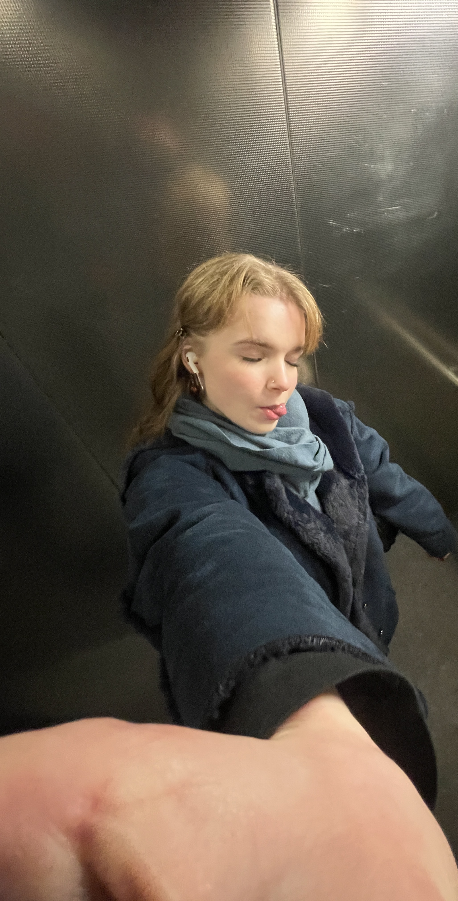

"Dragon's Call" ist ein familienfreundliches Brettspiel fuer jedes Alter. Es
testet das Geschick,
fordert Geschicklichkeit und strategisches Denken heraus.
Es wurde mit der Intention entworfen um an eine Universitaet fuer den Studiengang
Gamedesign versandt zu werden,
doch ueber die Zeit habe ich es sehr in mein Herz geschlossen und wuerde es am liebsten an einen
Verlag
schicken, um zu sehen,
ob Andere es genauso sehr lieben wie ich.
Ich habe wirklich viel Arbeit in das Design der
Figuren
gesteckt, sowie auch das Spielbrett und
alle anderen Assets dieses Games. Der Prozess hat wirklich viel Spass gemacht; darueber
nachzudenken, an welchen Stellen man es verbessern koennte, damit der Spielfluss
fluessiger ist, oder damit der Spielspass hoeher wird, es war echt ein cooles Projekt.
Ich bedanke mich fuer alle Freunde, Bekannte und Familienmitglieder die mir geholfen haben und
gutes
Feedback bringen konnten, damit es
nun so ist wie es ist.
Das Spiel hat ein paar Phasen durchlaufen die so aussehen:
Das hier war meine aller erste Skizze die ich fuer das Brettspiel gemacht habe. Ich habe
ueberlegt, welche Felder
es geben wird, was der Ziel des Spiels sein koennte, wie die Story waere und was fuer boosts
oder Hindernisse einem
begegnen koennten.
Hier habe ich ueberlegt wie man mehr Verwirrung in das Spiel einbauen koennte, weil ich
dachte,
dass es eine coole Idee waere auf die Verwirrung der Spieler zu bauen, die nicht direkt sehen in
welche Richtung
man laufen muss. Habe mich dagegen entschieden, da fuer diejenigen die das Spiel oefter spielen, es
kein Hindernis mehr waere.
Da ueberlegte ich, welche Kontraste das Spiel haben sollte, ob eher dunkler oder heller. Es
steht schon fest,
wie der Spielaufbau sein wird.
So sah eine Idee vom Spielbrett aus.
Dann dachte ich, es waere eine gute Idee Drehscheiben an das Brett anzubringen, die
moeglicherweise
zu Hindernissen im Spiel werden koennten, wenn sie richtig positioniert werden. Das hat leider
bei der Umsetzung nicht geklappt
Dann habe ich mich doch fuer dieses Motiv entschieden.
Und das ist das finale Produkt!
Frueher durften nur kaiserliche Tempel gelbe Daecher haben und waeren auch nur den
koeniglichen Familien zugaenglich, doch Ihr habt es auf das Gold abgesehen und wollt in diesen
Tempel gelangen.
Dies ist kein normales Spiel in dem ein Ritter den boesen Drachen bekaempft, ganz im Gegenteil! In
diesem Spiel seid IHR naemlich die Boesen!
Der in China hochverehrte Drache Long (welcher Fuelle, Wohlstand und Reichtum symbolisiert), sowie
die Schutzkrieger bewachen den kaiserlichen Tempel gefuellt
mit Gold und Wissen.
Ihr versucht Euch an allen Hindernissen vorbeizuschlagen um den Tempel auszurauben, ihr muesst euch
auch gegenseitig bekampfen, denn der Gewinner kann nur einer sein!
Um Informationen über die rot eingekreisten Bereiche zu bekommen, muss man mit
der Maus drüberhovern (funktioniert nur auf voller Bildschirmgröße).

Ueber mich (card-Flip)
Hi, mein Name ist Angelina Stalnovs und ich bin angehende Gamedesignerin. Momentan studiere ich Medieninformatik im 2. Semester und strebe an, in Zukunft eigene Spiele zu kreeiren um Menschen positiv zu beeinflussen und zu lehren. Mit Dargon's Call will ich Menschen naeher an die chinesische Kultur bringen. Ich hoffe sehr, dass es mir gelungen ist und hoffe, dass es gefallen finden wird.
Wenn du an einer Zusammenarbeit interessiert bist, kannst Du gerne das Formular in der Navbar ausfuellen damit wir in Kontakt treten koennen. Ansonsten findet man meine Socials auch im Footer. Ich freue mich auf eine gute Zusammenarbeit! ;-)